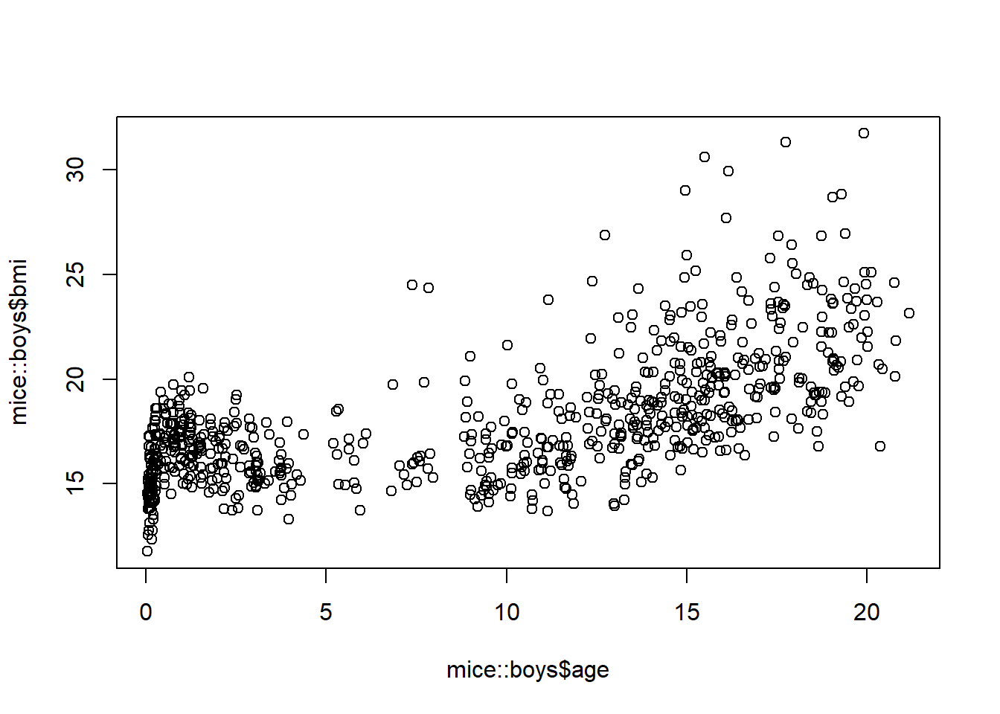
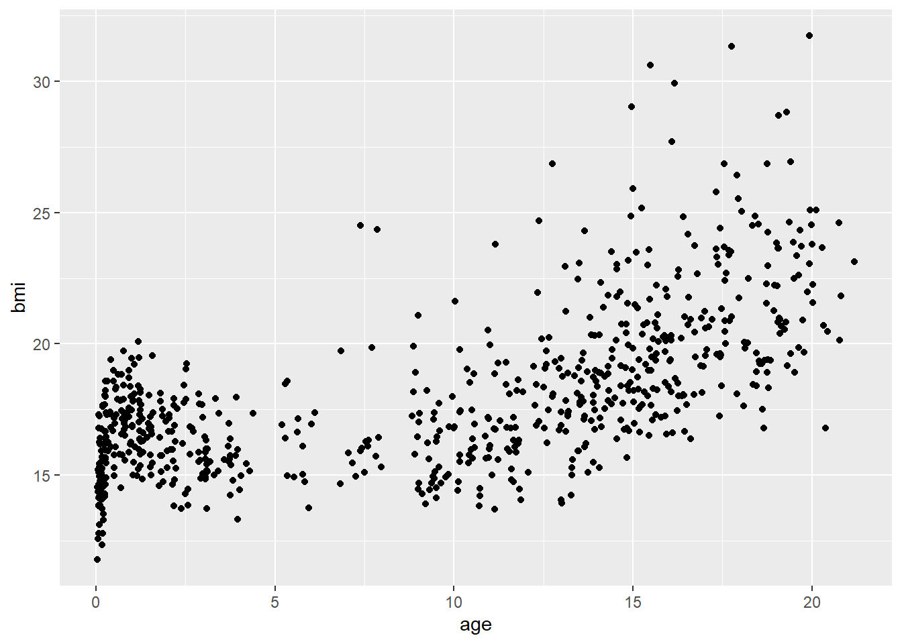

library(mice)
library(ggplot2)Warning: package 'ggplot2' was built under R version 4.2.3The following packages are required for this practical:
library(mice)
library(ggplot2)Warning: package 'ggplot2' was built under R version 4.2.3and if you’d like the same results as I have obtained, you can fix the random seed
set.seed(123)Open RStudio and continue working in your practicals project. Open a new R-script and start working in it for this practical.
Create a scatterplot between age and bmi in the mice::boys data set with the standard plotting device in R:
plot(mice::boys$bmi ~ mice::boys$age)
ggplot2p <- ggplot(mice::boys, aes(age, bmi))
p + geom_point()Warning: Removed 21 rows containing missing values (`geom_point()`).
Package ggplot2 offers far greater flexibility in data visualization than the standard plotting devices in R. However, it has its own language, which allows you to easily expand graphs with additional commands. To make these expansions or layers clearly visible, it is advisable to use the plotting language conventions. For example,
ggplot(data = mice::boys, aes(age, bmi)) +
geom_point() +
geom_smooth()would yield the same plot as
ggplot(mice::boys, aes(age, bmi)) + geom_point() + geom_smooth()but the latter style may be less informative, especially if more customization takes place and if you share your code with others.